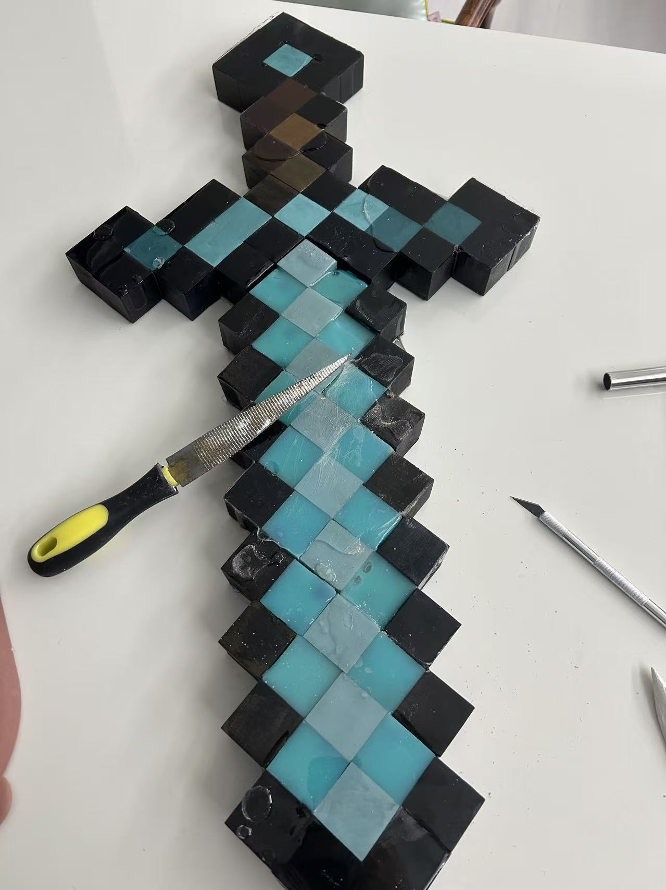
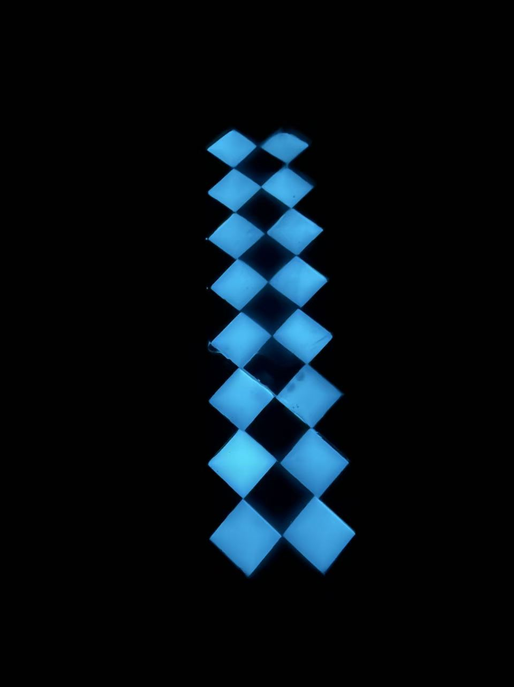
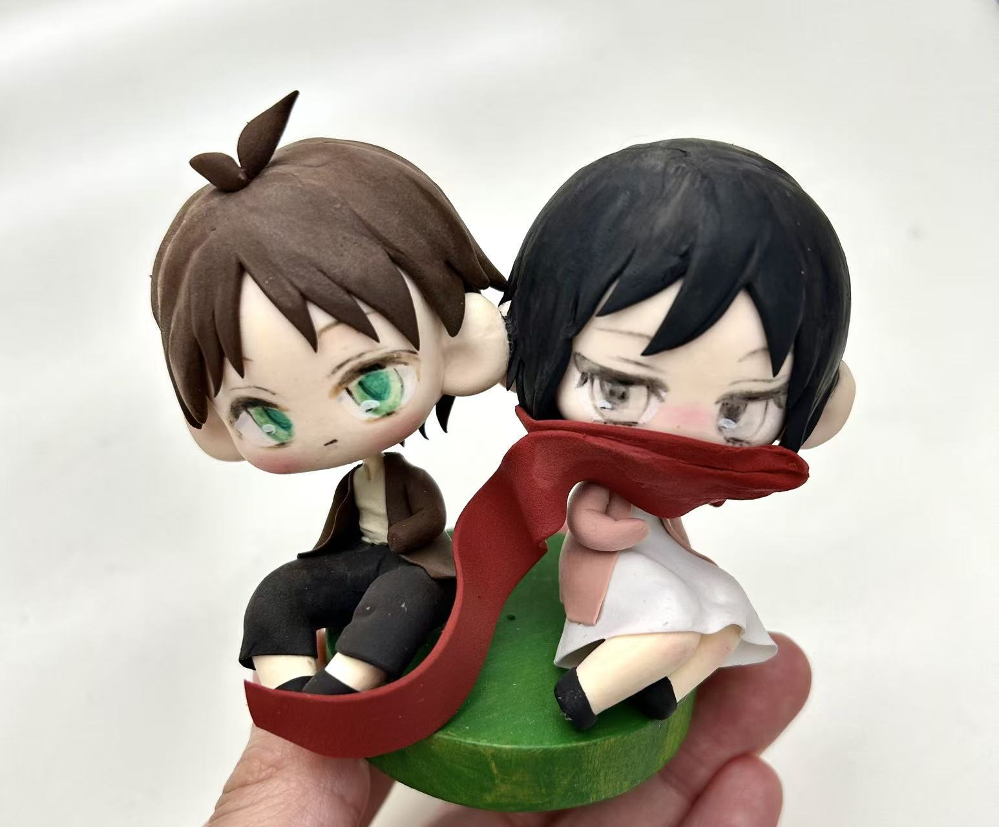
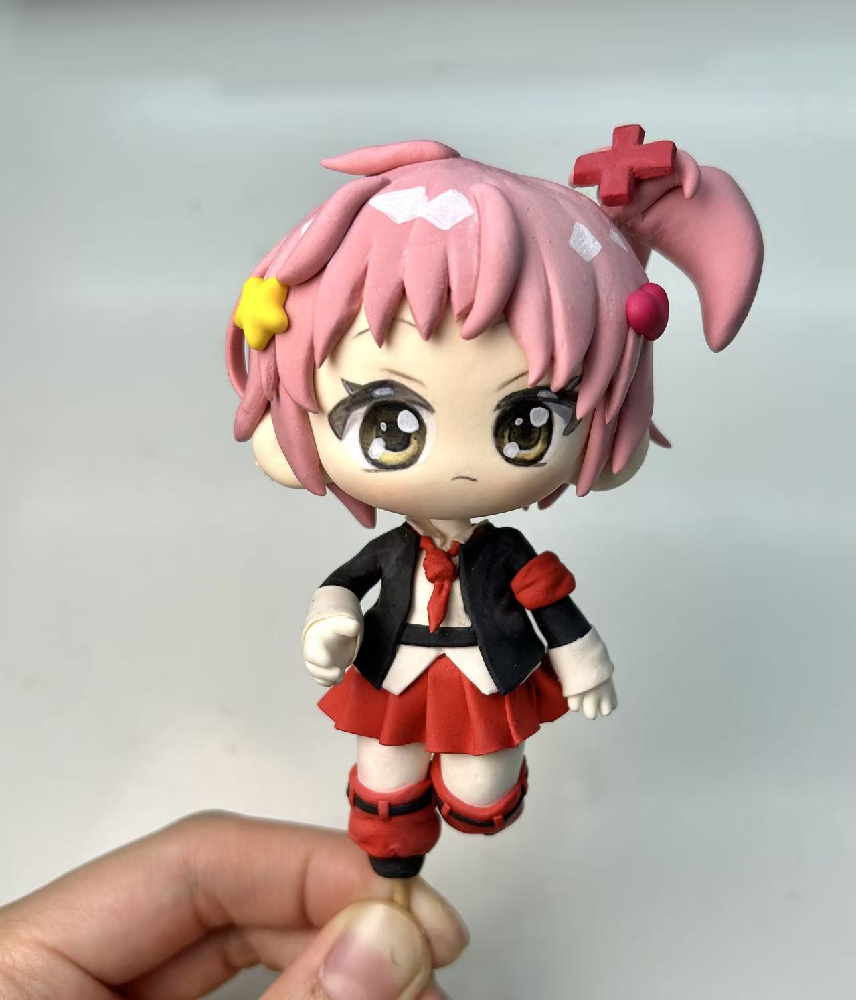
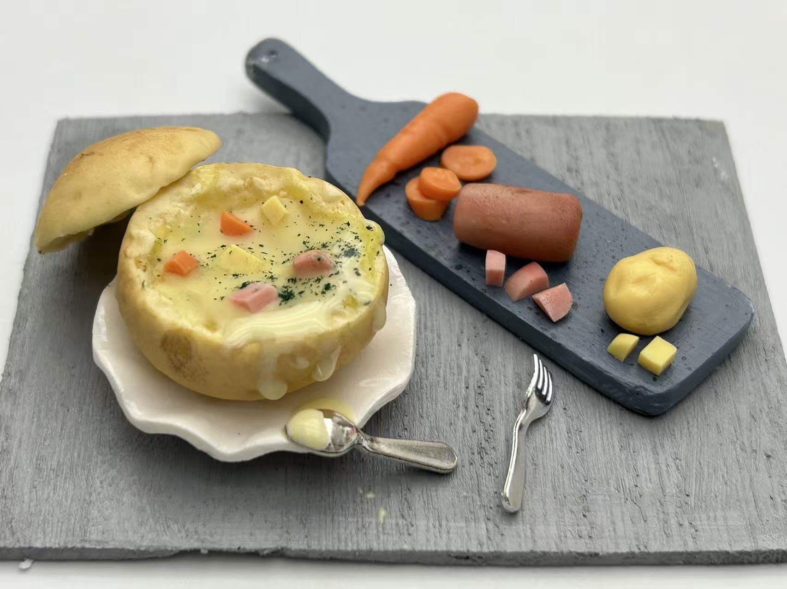
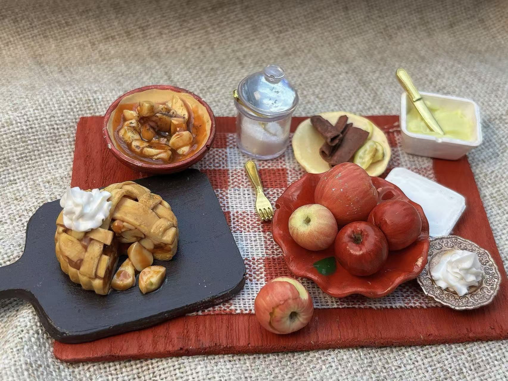
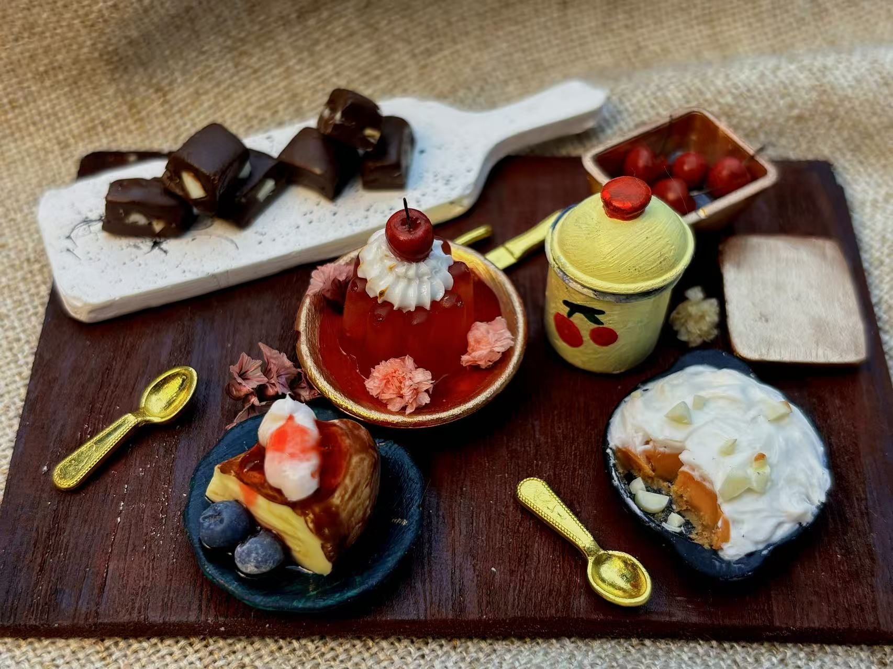
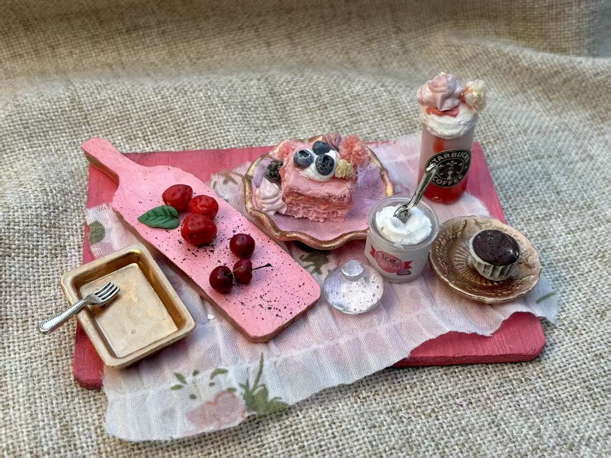

Minecraft Diamond Sword
I built this Minecraft diamond sword using resin and building blocks. The blade pieces were filled with glow-in-the-dark resin, so it actually lights up in the dark.


Hover over the images to see how it was made
Anime Clay Figures
These anime figures are sculpted entirely by hand using super lightweight clay. I paint every detail: eyes, hair, and tiny accessories with fine brushes.


Hover over the figures to learn who they are
Miniature Food Sculptures
These tiny food scenes are made using resin, plaster, and polymer clay. Click on each image to learn more about it



